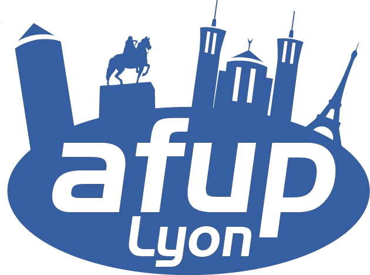

Hoa, un ensemble de bibliothèques PHP

Qui sommes-nous ?
Ivan Enderlin :
ivan.enderlin@
{
hoa-project.net
atoum.org
inria.fr
Qui sommes-nous ?
Julien Bianchi
@julbianchi
{
twitter.com
github.com
julien.bianchi@
{
atoum.org
hoa-project.net
Philosophie
Une bibliothèque est un ensemble de fonctionnalités dédiées à la
résolution d'un problème précis et isolé, grâce à son abstraction la plus
élevée
L'abstraction permet de s'adapter à plus de formes de
problèmes
La Force est dans l'abstraction
Contributions
Hoa :
un ensemble de bibliothèques PHP modulaires ,
extensibles et structurées
un pont entre le monde de la recherche et de l'industrie
un environnement pour développer des bibliothèques
Agenda
Présentation du projet
Quelques fondamentaux
Bibliothèques phares
Conclusion
Projets distribués
Central : l'ensemble de toutes les bibliothèques Hoa
(standards) et Hoathis (utilisateurs)Library/* : bibliothèques isoléesLiterature : manuels et une partie de la documentationKeynote : toutes les présentationsW3 et Static : le site Web de HoaBhoat : le robot qui maintient les différents projets de
Hoa
Liste complète
Sources, e.g. Hoa\Core
Via Git ,
project .git
$ git clone http://git.hoa-project.net/Library/Core.gitVia Github ,
sans Library/ :
$ git clone https://github.com/hoaproject/Core.gitVia Composer ,
avec le schéma :
{ "require": { "hoa/core": "dev-master" }, "minimum-stability": "dev" }… puis :
$ composer installVia les archives sur
download.hoa-project.net
Structure des bibliothèques
sources à la racine
Bin/ accessible via hoa
library :command Documentation/ pour le hack book Test/ pour les testsREADME.md, description et exemplescomposer.json pour Composer
Rolling-release
Pas de version !
master toujours fonctionnelTags réguliers pour des mises à jour non
quotidiennesNécessite une grande qualité (tests, API etc.)
Quelques chiffres*
Nombre de :
bibliothèques : > 50 (dont 15 finalisées)
fichiers : 565
lignes de code : ≃ 107 000
commits : > 1 700contributeurs : 27
installations via Packagist (depuis septembre
2012) : > 44 000
sur Github : > 180 forks et 155 ★
* entre le 1 janvier 2013 et aujourd'hui
Litératures
Documentations :
mini-tutoriel
manuel d'apprentissage : 9 chapitres
hack book : 15 chapitres
Awecode : quand le code
rencontre la vidéo
Recherche :
3 articles en conférences internationales
Autres événements communutaires, industriels (dont 2 par l'AFUP,
merci !) , formations etc.
(traduction en cours vers l'anglais)
Bibliothèque
Avantages :
une tâche = une bibliothèque
abstraite
réutilisation de code
meilleures performances (cache, optimisation…)
assemblage (pas de « boîtes noires »)
maintenance facilitée
Inconvénient :
Hoa\Core
Architecture générale :
Charge en < 5ms.
Protocole hoa://
Format :
hoa://Root [/Component ]*[#anchor ]
Abstrait l'accès à des ressources :
hoa://Application, à l'applicationhoa://Data, aux données de l'applicationhoa://Library, aux bibliothèques
Hoa\Registry::set('foo', 'bar');
var_dump(resolve('hoa://Library/Registry#foo')); // string(3) "bar"require 'hoa://Data/Configuration/.Cache/Foo.php';$ hoa compiler:pp hoa://Library/Json/Grammar.pp <( echo '[1, 2, 3]' ) -v dump$ hoa core:resolve --tree hoa://
Événements & écouteurs
Événements : asynchrones (à l'enregistrement) , anonymes
(à l'utilisation) , large diffusion à travers des composants
isolés
event('hoa://Event/Exception')->attach(new Hoa\File\Write('Foo.log'));Écouteurs : synchrones (à l'enregistrement) ,
identifiés (à l'utilisation) , interactions proches entre un
ou quelques composants
$server = new Hoa\Websocket\Server(…);
$server->on('message', function ( Hoa\Core\Event\Bucket $bucket ) {
$source = $bucket->getSource(); // instanceof Hoa\Core\Event\Source
$data = $bucket->getData(); // Array
});
Consistence
Dans et entre les versions de PHP et Hoa :
from/import, manipule les classesdnew, dynamic new $object = dnew('(Symfony or Hoathis or Hoa)\Foo\Bar');gestion des entités et des mots-clés (entityExists,
isKeyword, isIdentifier…)
xcallable, supporte et étend les
callables de PHPcompatibilité pour les versions antérieures (e.g.
trait_exists pour 5.3)
etc.
Flux uniformisés
Flux de PHP très puissants (!), uniformisés à travers plusieurs API et
interfaces de Hoa\Stream :
In, Out, Bufferable,
Lockable, Pathable, Pointable,
Statable, Touchable
etcablefiltres : entre la source et votre programme
wrappers : hoa://… ,
afup://…
etc:// flux composites : des flux qui embarquent des flux, e.g. un flux
XML lit sur un flux fichier
etc.
Exemples : Hoa\File, Hoa\Socket,
Hoa\Http…
Hoa\Websocket
WebSocket, protocole réseau standardisé
(RFC6455 ), full-duplex et
bidirectionnel ; communication via TCP ;
handshake via HTTP :
Hoa\Websocket propose un client et un serveur :
support de la RFC6455 et
feu-Hybi00
(ancien standard)
passe la suite de tests
Autobahn (utilisée par Mozilla, Google, Microsoft, Apache,
Facebook, Red Hat…)
Un message WebSocket*
0 1 2 3
0 1 2 3 4 5 6 7 8 9 0 1 2 3 4 5 6 7 8 9 0 1 2 3 4 5 6 7 8 9 0 1
+-+-+-+-+-------+-+-------------+-------------------------------+
|F|R|R|R| opcode |M| Payload len | Extended payload length |
|I|S|S|S| (4) |A| (7) | (16/64) |
|N|V|V|V| |S| | (if payload len==126/127) |
| |1|2|3| |K| | |
+-+-+-+-+-------+-+-------------+ - - - - - - - - - - - - - - - +
| Extended payload length continued, if payload len == 127 |
+ - - - - - - - - - - - - - - - +-------------------------------+
| |Masking-key, if MASK set to 1 |
+-------------------------------+-------------------------------+
| Masking-key (continued) | Payload Data |
+-------------------------------- - - - - - - - - - - - - - - - +
: Payload Data continued ... :
+ - - - - - - - - - - - - - - - - - - - - - - - - - - - - - - - +
| Payload Data continued ... |
+---------------------------------------------------------------+
*
5.2.
Base Framing Protocol
Un serveur WebSocket
Flux : Hoa\Socket\Server écoute
127.0.0.1:8889
Écouteurs : open, message,
binary-message, ping, error et
close
Exemple d'un écho :
$server = new Hoa\Websocket\Server(
new Hoa\Socket\Server('tcp://127.0.01:8889')
);
$server->on('message', function ( Hoa\Core\Event\Bucket $bucket ) {
$message = $bucket->getData()['message'];
echo 'Message: ', $message, "\n";
$bucket->getSource()->send($message);
return;
});
$server->run();
Un client WebSocket (.html)
↻
<input type="text" id="input" placeholder="Message…" />
<pre id="output"></pre>
<script>
var host = 'ws://127.0.0.1:8889';
var socket = null;
var input = document.getElementById('input');
var output = document.getElementById('output');
var print = function ( message ) {
var samp = document.createElement('samp');
samp.innerHTML = message + '\n';
output.appendChild(samp);
return;
};
input.addEventListener('keyup', function ( evt ) {
if(13 === evt.keyCode) {
var msg = input.value;
if(!msg)
return;
try {
socket.send(msg);
input.value = '';
input.focus();
}
catch ( e ) {
console.log(e);
}
return;
}
});
try {
socket = new WebSocket(host);
socket.onopen = function ( ) {
print('connection is opened');
input.focus();
return;
};
socket.onmessage = function ( msg ) {
print(msg.data);
return;
};
socket.onclose = function ( ) {
print('connection is closed');
return;
};
}
catch ( e ) {
console.log(e);
}
</script>
Un client WebSocket (.php)
Flux : Hoa\Socket\Client écoute 127.0.0.1:8889
Écouteurs : les mêmes
Exemple en CLI d'un prompt qui envoie des messages :
$readline = new Hoa\Console\Readline();
$client = new Hoa\Websocket\Client(
new Hoa\Socket\Client('tcp://127.0.0.1:8889')
);
$client->setHost('localhost');
$client->connect();
do {
$line = $readline->readLine('> ');
if(false === $line || 'quit' === $line)
break;
$client->send($line);
} while(true);
Un serveur WebSocket
Exemple d'un écho de broadcast :
$server = new Hoa\Websocket\Server(
new Hoa\Socket\Server('tcp://127.0.01:8889')
);
$server->on('message', function ( Hoa\Core\Event\Bucket $bucket ) {
$message = $bucket->getData()['message'];
echo 'Message: ', $message, "\n";
$bucket->getSource()->broadcast($message);
return;
});
$server->run();
Jouer avec le curseur
use Hoa\Console\Cursor as Cursor;Les couleurs :
Cursor::colorize('underlined foreground(yellow) background(#932e2e)');
echo 'foo';
Cursor::colorize('!underlined background(normal)');
echo 'bar';
Les déplacements :
Cursor::save();
Cursor::hide();
Cursor::move('← ← ← ↓ ↓');
Cursor::clear('↔');
echo 'New line!';
Cursor::restore();
Cursor::show();Mais aussi : getPosition, moveTo,
setStyle etc.
Jouer avec la fenêtre
use Hoa\Console\Window as Window;La taille et la position :
Window::setSize(80, 50);
var_dump(Window::getPosition());L'état :
Window::minimize();
Window::restore();
Window::raise();
Window::lower();Le contenu :
Window::scroll('↑ ↑ ↑');
Window::refresh();Mais aussi : setTitle, getTitle,
getLabel, copy etc.
Lecture avancée de ligne
Opérations supportées : édition avancée, historique, auto-complétion et
UTF-8 :
↑ et ↓ , manipuler l'historique← et → , déplacer le curseur sur la ligneCtrl + A , se déplacer au début,
E en finCtrl + B , se déplacer en arrière d'un mot,
F en avant⌫ , supprimer un caractèreCtrl + W , supprimer jusqu'au début du mot⇥ , pour auto-compléter le mot↵ , pour envoyer la ligne
Auto-complétion
Hoa\Console\Readline\Autocompletion\Word avec la liste des
fonctions PHP :
$readline = new Hoa\Console\Readline();
$readline->setAutocompleter(new Hoa\Console\Readline\Autocompleter\Word(
get_defined_functions()['internal']
));
do {
$line = $readline->readLine('> ');
if(false === $line || 'quit' === $line)
break;
echo $line, "\n";
} while(true);Fonctionne avec un pipe ou une redirection !
Ajouter un raccourci
Inverser la casse de la ligne avec Ctrl + R :
$readline->addMapping('\C-R', function ( Hoa\Console\Readline $self ) {
// Clear the line.
Hoa\Console\Cursor::clear('↔');
echo $self->getPrefix();
// Get the line text.
$line = $self->getLine();
// New line.
$new = null;
// Loop over all characters.
for($i = 0, $max = $self->getLineLength(); $i < $max; ++$i) {
$char = mb_substr($line, $i, 1);
if($char === $lower = mb_strtolower($char))
$new .= mb_strtoupper($char);
else
$new .= $lower;
}
// Set the new line.
$self->setLine($new);
// Set the buffer (and let the readline echoes or not).
$self->setBuffer($new);
// The readline will continue to read.
return $self::STATE_CONTINUE;
});
Processus
Exécution rapide :
var_dump(Hoa\Console\Processus::execute('id -u -n'));Exécution « dynamique », écouteurs start, stop,
input, output et timeout :
$processus = new Hoa\Console\Processus($command);
$processus->on('input', function ( $bucket ) {
$bucket->getSource()->writeAll(…);
return false; // means to close the pipe.
});
$processus->on('output', function ( $bucket ) {
echo $bucket->getData()['line'], "\n";
});
$processus->run();
(Hoa|Symfony)\Console
symfony/console :
Très haut niveau d'abstraction (Dialog, ProgressBar)
Orientée commandes , peu d'intaractivité
Application, CommandAPI Process dans un composant dédié
hoa/console :
Plus bas niveau d'abstraction (Cursor, Readline)Orientée terminal , très interactif
Router, Dispatcher, ControllerAPI Processus intégrée
Hoa\Compiler
Analyser et manipuler des données textuelles
Hoa\Compiler\Llk est un compilateur de compilateurs :
compile une grammaire en compilateur
compilateur = analyseur lexical + analyseur syntaxique
séquence valide transformée en AST (arbre)
Grammaire écrite en langage PP (langage maison)
Grammaire simplifiée de JSON
Lexèmes (unité lexicale, atomique) :
%skip space \s
// Scalars.
%token true true
%token false false
%token null null
// Strings.
%token quote_ " -> string
%token string:string [^"]+
%token string:_quote " -> default
// Objects.
%token brace_ {
%token _brace }
// Arrays.
%token bracket_ \[
%token _bracket \]
// Rest.
%token colon :
%token comma ,
%token number \d+Règles :
value:
<true> | <false> | <null> | string() | object() | array() | number()
string:
::quote_:: <string> ::_quote::
number:
<number>
#object:
::brace_:: pair() ( ::comma:: pair() )* ::_brace::
#pair:
string() ::colon:: value()
#array:
::bracket_:: value() ( ::comma:: value() )* ::_bracket::
Analyser du JSON
Manuellement :
// 1. Load grammar.
$compiler = Hoa\Compiler\Llk::load(new Hoa\File\Read('Json.pp'));
// 2. Parse a data.
$ast = $compiler->parse('{"foo": true, "bar": [null, 42]}');
// 3. Dump the AST.
$dump = new Hoa\Compiler\Visitor\Dump();
echo $dump->visit($ast);
/**
* Will output:
* > #object
* > > #pair
* > > > token(string:string, foo)
* > > > token(true, true)
* > > #pair
* > > > token(string:string, bar)
* > > > #array
* > > > > token(null, null)
* > > > > token(number, 42)
*/En ligne de commande :
$ hoa compiler:pp Json.pp <( echo '{"foo": true, "bar": [null, 42]}' ) -v dump
Finaliser la compilation
Utiliser Hoa\Visitor pour visiter l'arbre
Opérations possibles :
pretty-printer vérification de types
optimisations diverses
exécution*
transformation vers un autre langage (e.g. opcode, asm…)**
* « langage interprété »
** « langage compilé »
Génération de données
Grammar-based data generation :
article publié et présenté à
A-MOST 2012 ,
conférence internationale
plusieurs algorithmes : isotropique, aléatoire et uniforme, exhaustive
bornée, par couverture
Exemple avec la grammaire des… PCRE
(voir Hoa\Regex)
$ hoa praspel:shell
// …
> regex: /fo{2,4}ba[rz]+/
> .sample regex
'foobazzz'
> .sample regex
'foooobazrzrzrzz'
Hoa\Ruler
Bel exemple d'utilisation de Hoa\Compiler
Moteur de règles, écrites dans un langage dédié, proche d'SQL
$ruler = new Hoa\Ruler();
// 1. Write a rule.
$rule = 'group in ("customer", "guest") and points > 30';
// 2. Create a context.
$context = new Hoa\Ruler\Context();
$context['group'] = 'customer';
$context['points'] = function ( ) {
return 42;
};
// 3. Assert!
var_dump(
$ruler->assert($rule, $context)
);
Fonctionnement
Exemple de compilation vers PHP :
$database->save(
serialize(
Hoa\Ruler::interprete(
'group in ("customer", "guest") and points > 30'
) // rule → AST → interpreter → model
) // model → serialized
);
Praspel
PHP Realistic Annotation and SPEcification Language
Programmation par contrat
Décrit un modèle en utilisant des annotations
Contraintes formelles : pré-, postconditions et invariants
Inclue dans les commentaires /** … */ du code source au niveau
des données : attributs et méthodes
Sujet de thèse, effectuée au
DISC et à
l'INRIA
3 articles scientifiques publiés et 1 journal en préparation
Unir plusieurs théories au sein d'un langage simple et efficace
Que faire d'un contrat ?
Design-by-Contract :
caller : « je m'engage à satisfaire ta
précondition »callee : « je m'engage à établir ma
postcondition »invariants satisfaits avant et après l'exécution du callee
Contract-based testing :
utilise les préconditions pour générer des données de tests
utilise les postconditions et invariants pour établir le verdict sur
test
Exemple basique
class C {
/**
* @invariant foo: float();
*/
protected $foo = 0;
/**
* @requires x : integer() or string('a', 'z', 1);
* @ensures \result: boolean();
*/
public function f ( $x ) { … }
}
@invariant, invariant@requires, précondition@ensures, postconditionet d'autres : @throwable, @behavior etc.
Qu'est-ce qu'un test ?
préambule
données de test
oracle
cas de test
génération de données automatique*
fournie par le contrat
écrit avec l'API d'atoum**
parce qu'atoum c'est bien !
aussi hackable que Hoa
intégré aux outils industriels
Suite de test : ensemble de cas de tests
* Amusons-nous avec hoa
praspel:shell !
** Amusons-nous avec… hoa hoathis
atoum:generate !
Symfony
Intégration très simple :
compatible PSR-0
bibliothèques disponibles dans packagist
une bibliothèques → un bundle
les bundles sont des ponts entre Hoa et Symfony
Plusieurs bundles disponibles :
Une question d'API
Un bundle contient au moins :
une dépendance vers la bibliothèque qu'il intègre
une dépendance vers Hoa\Core
des adapters /services pour connecter la libraire
Adapter l'API
Tout est dans la bibliothèque, on implémente juste les interfaces de Symfony :
use Hoa\Stringbuffer\ReadWrite;
use Hoa\Xml\Exception\Exception as XmlException;
use Hoa\Xyl\Interpreter\Html\Html;
use Hoa\Xyl\Xyl;
use Symfony\Component\Templating\EngineInterface;
use Symfony\Component\Templating\TemplateNameParserInterface;
class Engine implements EngineInterface
{
public function render($name, array $parameters = array())
{
if (false === $this->exists($name)) {
throw new \InvalidArgumentException(…);
}
try {
$xyl = new Xyl($this->load($name), new ReadWrite(), new Html());
} catch (XmlException $exception) {
throw new \RuntimeException(…);
}
try {
$xyl->interprete();
$xyl->render();
} catch(\Exception $exception) {
throw new \RuntimeException(…);
}
return $xyl->getOutputStream()->readAll();
}
}
Hoathis\BenchBundle
Bundle basé sur la bibliothèque Hoa\Bench
Totalement intégré au profiler et à la console
Installation :
{ "require-dev": { "hoathis/bench-bundle": "dev-master" } }
Démarrage :
//app/AppKernel.php
if (in_array($this->getEnvironment(), array('dev', 'test'))) {
…
$bundles[] = new \Hoathis\Bundle\BenchBundle\BenchBundle();
}
Hoathis\BenchBundle
Service bench dans les controlleurs :
class FooController extends Controller {
public function barAction()
{
$this->container->get('bench')->foo->start();
…
$this->container->get('bench')->foo->stop();
return new Response();
}
}
Helper Twig :
{% benchstart 'listing' %}
{% for item in items %} … {% endfor %}
{% benchstop 'listing' %}
Sohoa
Hoa est un ensemble de bibliothèques
Sohoa est un framework construit avec Hoa :
projet guidé et maintenu par la communauté
premiers balbutiements
permet d'éprouver et améliorer Hoa
propose des sur-couches « applicatives » aux bibliothèques
standards
Voir github.com/sohoa
Contributions
Hoa :
un ensemble de bibliothèques PHP modulaires ,
extensibles et structurées
un pont entre le monde de la recherche et de l'industrie
un environnement pour développer des bibliothèques